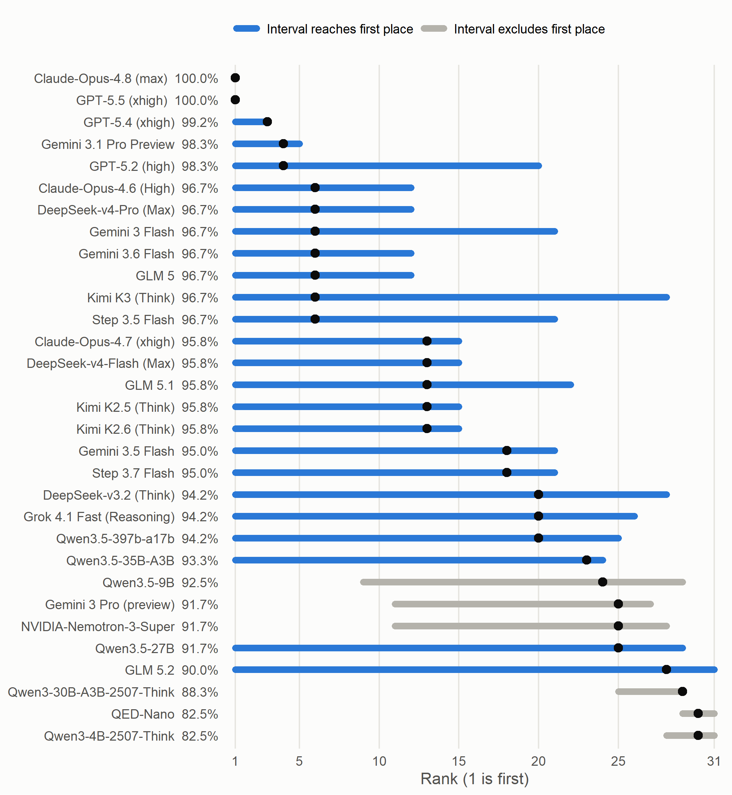

Are LLM Benchmark Differences Statistically Significant? 25 of 31 Models Could Be First on AIME 2026
MathArena publishes every graded attempt on AIME 2026. Resample the problems and most of the leaderboard can finish first.
On 16 October MathArena added Gemini 4 Argon to its September ArXivMath leaderboard, where it sits at 87.74%, behind GPT-6.1 Sol at 91.51%, a gap of about two problems out of 53. The same day Quanta profiled Moritz Hardt, who argues that benchmark scores mislead in absolute terms while rankings between models still carry real information. So how much information does a ranking carry when the gap is a few problems?
MathArena makes that answerable, because it publishes every graded attempt, which few leaderboards do. For AIME 2026 that is 32 models on 30 problems, two or four attempts each. The code below downloads them from Hugging Face at the exact revision used here.
rev <- "f916cfc3eebc6ffbbf57d70918e79804d740806f"
url <- paste0("https://huggingface.co/datasets/MathArena/aime_2026_outputs/resolve/",
rev, "/data/train-00000-of-00001.parquet")
f <- file.path(tools::R_user_dir("matharena", "cache"), "aime_2026_outputs.parquet")
if (!file.exists(f)) {
dir.create(dirname(f), recursive = TRUE, showWarnings = FALSE)
download.file(url, f, mode = "wb")
}
raw <- nanoparquet::read_parquet(f, col_select = c("model_name", "problem_idx",
"idx_answer", "correct"))
d <- data.frame(model = raw$model_name, problem = as.integer(raw$problem_idx),
attempt = raw$idx_answer, correct = as.integer(raw$correct))
# One row per model, one column per problem: the share of attempts correct
A <- tapply(d$correct, list(d$model, d$problem), mean)
B <- A[rowSums(is.na(A)) == 0, ] # models with attempts on all 30
score <- rowMeans(B)set.seed(20261020)
ranks <- replicate(4000, {
s <- rowMeans(B[, sample.int(ncol(B), replace = TRUE)])
rank(-s, ties.method = "min")
})
lo <- apply(ranks, 1, quantile, 0.025, type = 1)
hi <- apply(ranks, 1, quantile, 0.975, type = 1)The result
Resample the 30 problems with replacement 4,000 times, rescore every model each time, and record where it lands. 25 of the 31 models with attempts on every problem have a 95% rank interval that reaches first place.

Figure 1: Each bar is a model’s 95% bootstrap rank interval from resampling the 30 AIME 2026 problems. The dot is its rank on the actual 30, with ties sharing the best rank. Blue bars reach first place. The two perfect scores rank first in every resample, so their bars shrink to the dot. Equal scores can get different bars. Every blue model slipped on at most 3 distinct problems and every gray one on at least 4.
By this measure only 6 models can be ruled out of first.
Half the test is blank
solved_by_all <- colSums(B < 1) == 0
# Share of the variance in model scores that each problem contributes
share <- apply(B, 2, cov, y = score) / (ncol(B) * var(score))
top5 <- sort(share, decreasing = TRUE)[1:5]
data.frame(problem = names(top5), attempts_correct = pct(colMeans(B)[names(top5)]),
share_of_spread = pct(top5))
## problem attempts_correct share_of_spread
## 1 30 61% 26%
## 2 29 85% 18%
## 3 15 20% 14%
## 4 14 93% 11%
## 5 10 86% 10%16 of the 30 problems were solved by all 31 models on every attempt. They add the same amount to every score, so they cannot move a ranking. Five problems carry 80% of the spread between models. MathArena now lists AIME 2026 among its deprecated competitions.
Two kinds of error bar
MathArena prints a 95% interval next to every AIME 2026 score, which most leaderboards do not.
All 31 of the 31 intervals match 1.96 * sqrt(p * (1 - p) / attempts) to the
second decimal. That interval answers one question well: how much would the score move if the
model reran these same 30 problems?
A launch announcement usually means a broader question: how would the model do on other problems of this kind? For that one the problem is the unit that was sampled, and a model that misses a problem tends to miss it on every attempt. Computed over problems, the intervals run a median 1.7 times wider. For DeepSeek-v3.2 (Think), the printed plus or minus 4.19 points becomes plus or minus 7.31.
The choice changes the verdict. Here is every model below a perfect score compared with GPT-5.5 (xhigh), first over attempts with Fisher’s exact test, then problem by problem with an exact sign-flip test on the paired differences.
ref <- "GPT-5.5 (xhigh)" # 120 of 120 correct
below <- names(score)[score < 1]
fisher_p <- sapply(below, function(m) {
x <- d$correct[d$model == m]
fisher.test(matrix(c(120, 0, sum(x), sum(1 - x)), 2))$p.value
})
signflip <- function(x) {
x <- x[x != 0]
if (length(x) == 0) return(1)
s <- as.matrix(expand.grid(rep(list(c(-1, 1)), length(x))))
mean(abs(s %*% x) >= abs(sum(x)) - 1e-12)
}
pair_p <- sapply(below, function(m) signflip(B[ref, ] - B[m, ]))
rbind(attempts = c(raw = sum(fisher_p < 0.05), holm = sum(p.adjust(fisher_p, "holm") < 0.05)),
problems = c(raw = sum(pair_p < 0.05), holm = sum(p.adjust(pair_p, "holm") < 0.05)))
## raw holm
## attempts 14 7
## problems 2 1Over attempts, 14 of the 29 models below a perfect score are significantly behind. Over problems, 2 are, and 1 after a Holm correction for 29 comparisons. The bootstrap rules out 6 and the exact test at most 2, because percentile intervals from 30 resampled problems run narrow. I would trust the exact test, which makes the field more tied, not less.
The test also gives a rule you can do in your head. Against a perfect score every paired
difference is positive, so the p-value is 2 * 0.5^k, where k is the number of distinct
problems a model slipped on. Significance needs k of at least 6. The median model below
perfect slipped on 2.
Check coverage before averaging
One model is missing from the figure. The file has no attempts from Qwen3.5-4B on 6 problems (10, 15, 17, 28, 29, 30), including 4 of the 5 hardest. A plain average of the file ranks it 4th of 32, behind only Claude-Opus-4.8 (max), GPT-5.5 (xhigh), and GPT-5.4 (xhigh). MathArena’s own table handles this correctly. It estimates the missing problems with an item response model, and on 17 October it ranked the model 29th at 89.66%.
How big a gap can a benchmark see
The same arithmetic gives a minimum detectable difference for any benchmark. When two models
answer each item once, the paired difference on an item is 1, 0, or minus 1, and its variance is
close to the discordance rate, the share of items where exactly one model is right. At 5%
significance and 80% power the smallest reliable gap is about 2.8 * sqrt(discordance / n).
n <- c("AIME" = 30, "ArXivMath September" = 53, "GPQA Diamond" = 198,
"SWE-bench Verified" = 500, "Humanity's Last Exam" = 2500)
data.frame(items = n, disagree_10pct = round(100 * mdd(n, 0.10), 1),
disagree_20pct = round(100 * mdd(n, 0.20), 1))
## items disagree_10pct disagree_20pct
## AIME 30 16.2 22.9
## ArXivMath September 53 12.2 17.2
## GPQA Diamond 198 6.3 8.9
## SWE-bench Verified 500 4.0 5.6
## Humanity's Last Exam 2500 1.8 2.5The two right columns are gaps in percentage points. Item counts come from the GPQA paper, the SWE-bench Verified release, and the Humanity’s Last Exam paper. This is a normal approximation for one attempt per item, so read it as an order of magnitude. Even if Argon and GPT-6.1 Sol disagreed on only one problem in ten, a gap would need about 12 points to show up reliably. The current gap is 3.77 points. That is a statement about 53 problems, not about either model.
The same result in Python
Here is the same resampling in numpy, reading the same file with three independent seeds.
import numpy as np
import pandas as pd
d = pd.read_parquet(r.f, columns=["model_name", "problem_idx", "correct"])
d["problem"] = d["problem_idx"].astype(int)
A = d.pivot_table(index="model_name", columns="problem", values="correct", aggfunc="mean")
B = A.dropna().to_numpy()
def reach_first(seed, reps=4000):
rng = np.random.default_rng(seed)
idx = rng.integers(0, B.shape[1], size=(reps, B.shape[1]))
s = B[:, idx].mean(axis=2) # models x reps
rank = 1 + (s[None, :, :] > s[:, None, :]).sum(axis=1)
lo = np.quantile(rank, 0.025, axis=1, method="inverted_cdf")
return int((lo == 1).sum())
counts = {seed: reach_first(seed) for seed in (1, 2, 3)}
print(counts, "of", B.shape[0])
## {1: 25, 2: 25, 3: 25} of 31Every seed lands on 25.
What this does not show
- AIME 2026 is saturated. A harder benchmark separates models better. The method transfers, the tie count does not.
- If these 30 problems are all you care about, only attempt noise is left, and the printed intervals are the right ones.
- A bootstrap over 30 problems, only 14 of which carry any information, is coarse. The sign-flip test is exact.
- MathArena marks 22 of the 32 models as released after the competition was published. This post does not try to account for that.
- One benchmark, one subject. A paper at this year’s ICML workshop on hypothesis testing, The Leaderboard Lottery, reports that on data calibrated to the Open LLM Leaderboard, the reported winner was the true best only 0 to 58 percent of the time when prompts were resampled.
What to do on Monday
- Before reading a gap, ask how many items the benchmark has, and compute
2.8 * sqrt(discordance / n). - Compare models paired on the same items. Two overlapping confidence intervals answer a different question.
- When the claim is about a kind of task, compute error bars over items, not attempts.
- Check coverage before averaging. A model missing the hard items looks better.
- Report the set of models that could plausibly be first, not a single winner.
Computing uncertainty over problems rather than attempts is the same move as clustering standard errors by the unit that was actually sampled, which is covered in A Guide on Data Analysis.
Data: “Model Outputs AIME 2026” by MathArena (Dekoninck et al. 2026,
arXiv 2605.00674), from
Hugging Face at revision
f916cfc, licensed CC BY-NC-SA 4.0. This
post does not redistribute the dataset. The code downloads it from the source and keeps four
columns, and the page shows only statistics computed from them. Leaderboard values quoted from
matharena.ai were read on 17 October 2026, and the Argon and GPT-6.1 Sol scores were unchanged
on 25 October. Thanks to the MathArena
team for publishing raw attempts, which is what makes a check like this possible.
Mike Nguyen, PhD
My research interests include marketing, and social science.